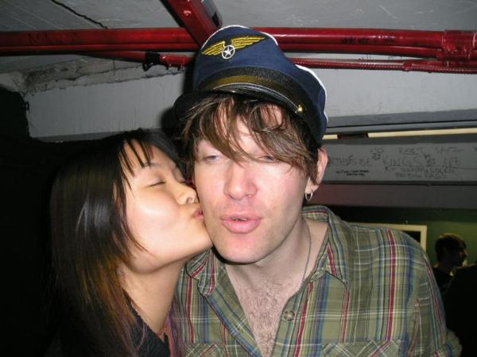

[03/16/2006]
[02/01/2006]
[01/10/2006]
[12/28/2005]
[12/14/2005]
[12/06/2005]

[11/11/2005]
Put up a contact section and new clip art.
Put up an about section.
Got some eyeliner, red lipstick, a camera, and some self-promoting pictures.
New People page under Photographs.
I also found the soundtrack for Stubbs the Zombie, and you kids can check out the Dandy Warhols' cover of "All I Have to do is Dream" for a limited time here.
Uploaded new photographs from weekend in Toronto.
Everything is up finally.
But this is still my favourite picture. More under "Photographs".
so i've noticed that my appetite has returned to normal. the three weeks after going vegetarian, i was an absolutely ravenous beast. the doctor turned out to be right, the whole i-have-tapeworms idea was just due to a bipolar thing and nothing to worry about. i guess i shouldn't have attacked him like that.